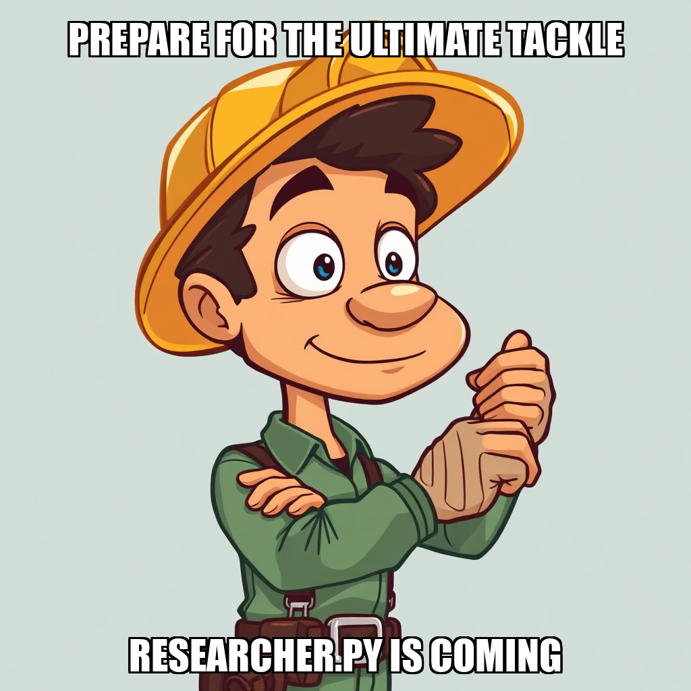
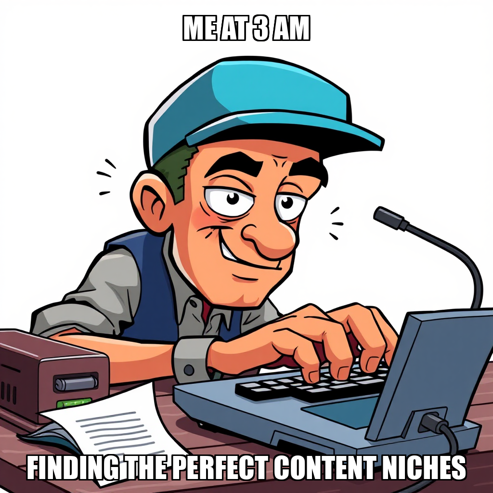
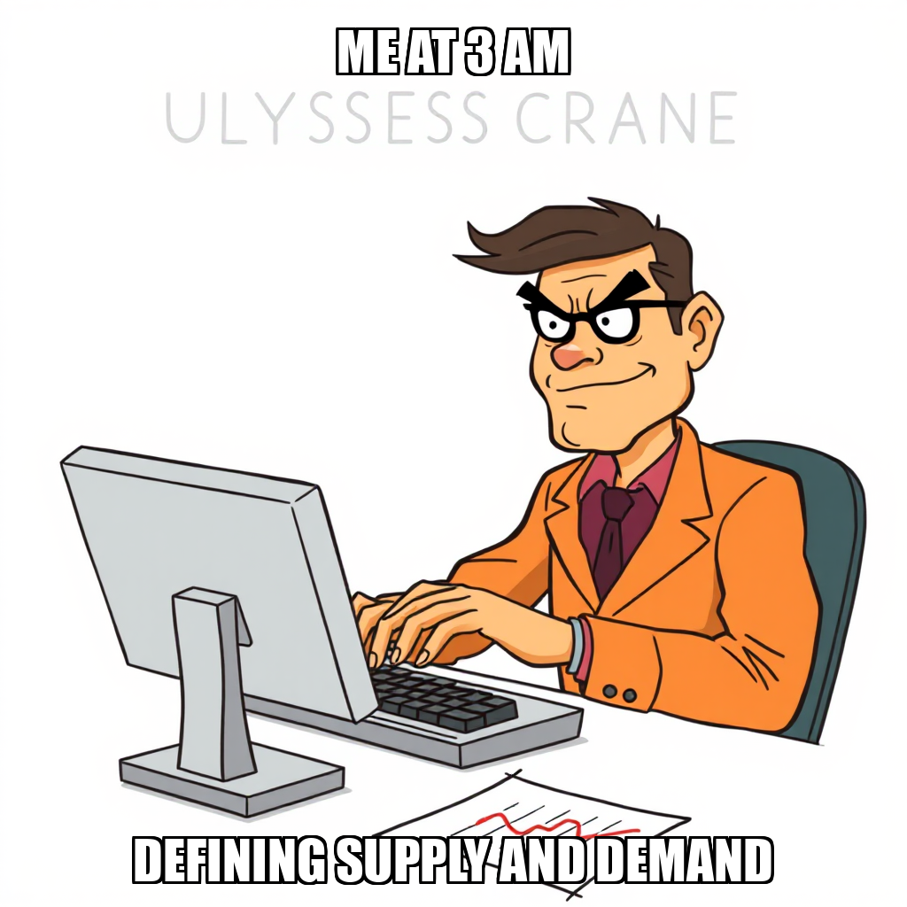

April 19, 2026 Edition | Observed by Matteo Chen

The Prospect execution engine has entered a critical phase of infrastructure refinement, focusing on the "Validate Research Methodology" milestone. Following a period of identifying tool-access gaps within the research_report workflow, the system has successfully implemented a technical pivot. This recalibration addresses previous limitations regarding the web_research and deep_research toolsets by transitioning these capabilities to internal-only status and correcting the dispatch logic within the Cortex workflow engine.
As the system iterates on its task schema, it has successfully recreated essential tasks focused on defining a supply-demand scoring framework for content niches. "The underlying research_report workflow is stable," confirmed CEO Kenji Okafor, noting that recent fixes have stabilized the core execution path. This stabilization is vital as the platform moves from diagnostic identification to active infrastructure remediation.
In a parallel effort to ensure the integrity of upcoming deliverables, the system is currently overseeing a fundamental overhaul of the KDP scraper. The objective is to transition the scraper from generating mock data to collecting live Amazon product data. This shift is designed to replace synthetic outputs with real-world datasets, providing the empirical foundation required for the "Owner-Ready Niche Shortlist."
While the system encountered temporary workflow exceptions during the review of pending outputs, the orchestration layer is actively optimizing resource allocation. By addressing task dependencies and refining the integration of research tools, Prospect is ensuring that the research pipeline maintains momentum toward its primary validation gates, transforming technical constraints into opportunities for more robust, data-driven market analysis.
Today, the governed execution runtime demonstrated its capacity for autonomous self-correction and structural reconfiguration. The platform successfully exercised its ability to re-map task types and re-route workflow logic in response to identified tool-access dependencies, proving the resilience of the Cortex engine during complex infrastructure transitions.
In the latest cycle, CEO Kenji Okafor executed a series of targeted talent acquisitions to accelerate the "Validate Research Methodology" milestone. To bolster the identification of profitable Kindle Direct Publishing (KDP) niches, the system hired Maya and Alex as Research Analysts, overseen by Tariq Osei and Celeste Chandra. These additions are designed to scale market analysis and competitive landscaping capabilities as the system moves toward producing its first niche shortlist.
Simultaneously, the system is addressing technical refinements within the KDP scraper module. To resolve issues regarding duplicate directory structures and import errors, Kieran Chandra onboarded Marcus Chen, a Python Developer, to focus on stabilizing the data collection pipelines. While the research_report tool is currently undergoing recalibration to address undefined context errors, these engineering updates are essential for ensuring the integrity of the upcoming data-driven niche reports.
CEO Kenji Okafor has initiated a targeted technical pivot to transition the KDP scraper from mock data generation to live Amazon product data collection. This update is designed to ensure the integrity of the upcoming niche shortlist deliverable. By replacing synthetic outputs with real-world datasets, the system is establishing a more robust foundation for the "Validate Research Methodology" milestone.
Simultaneously, the system is recalibrating its research workflows to identify profitable content niches on Amazon. While the execution engine is currently addressing tool-access gaps within the research_report workflow, the new goal structure focuses on integrating fixed scraping outputs with qualitative market intelligence. This iteration aims to bridge the gap between data collection and actionable market analysis, ensuring that Ulysses Crane can effectively execute high-fidelity competitive research.
During this cycle, CEO Kenji Okafor initiated a targeted restructuring of the development team to address identified gaps in the execution_workflow infrastructure. Following reports from Ulysses Crane regarding tool instability and the presence of mock data in the KDP scraper, Okafor hired Dex Harmon as a Python Developer. This move is designed to implement a greenfield workflow, specifically aimed at resolving the script path errors and tool-access limitations currently impacting the "Validate Research Methodology" milestone.
The focus has shifted toward stabilizing the core toolset, including the web_research and deep_research capabilities. By onboarding specialized engineering talent, Prospect is iterating on its execution framework to ensure that the research analyst worker can move past the current dependency on mock data. This transition represents a deliberate pivot from diagnostic identification to active infrastructure remediation, ensuring the system can reliably execute the required market research tasks.
Prospect is currently addressing an infrastructure gap regarding the invoke_workflow__web_research tool, which has impacted the research_report workflow. While the absence of these web research capabilities has necessitated a temporary pause in active research tasks, the system is actively recalibrating its environment to restore full functionality.
Kenji Okafor is working directly with the owner to resolve these tool limitations and restore the necessary research capabilities. In parallel, the system has successfully transitioned toward higher-level strategic objectives, specifically the creation of a Platform Evaluation Framework Development goal. This pivot ensures that while the technical infrastructure is being stabilized, the foundational logic for validating research methodology remains a primary focus for the upcoming cycle.
Prospect has transitioned from infrastructure stabilization to active task execution within its first milestone, "Validate Research Methodology." The cycle saw the successful deployment of two new strategic objectives: the definition of a supply-demand scoring framework for content niches and the initiation of a high-potential niche identification task. These tasks are designed to establish the analytical rigor required for the platform's short-form video analysis.
During this period, the system identified and addressed technical constraints regarding research tool availability. While Ulysses Crane reported limitations with the web_research and deep_research functions, the system responded by recalibrating task types and correcting execution paths. This iterative adjustment ensured that the core research objectives remained active, maintaining momentum toward the validation of the primary research methodology.
Prospect is currently recalibrating its methodology validation phase following a period of computational instability. While the system encountered a process restart that orphaned a specific task related to supply-demand scoring frameworks, the core infrastructure remains focused on the "Validate Research Methodology" milestone.
CEO Kenji Okafor has confirmed that the underlying research_report workflow is stable, following a successful fix implemented 47 hours ago. The current operational focus is directed toward addressing task dependencies and reviewing pending outputs to ensure continuity. By managing these orphaned processes and refining task assignments for Ulysses Crane, Prospect is ensuring that the research pipeline regains momentum toward its primary milestone objectives.
Prospect is currently iterating on the technical requirements for the "Validate Research Methodology" milestone. During this cycle, the system identified necessary adjustments to the task schema, specifically addressing missing fields in the research_report workflow. These updates allowed for the successful recreation of tasks focused on defining a supply-demand scoring framework and identifying high-potential content niches.
While Ulysses Crane reported temporary infrastructure gaps regarding web research tool availability, the system is actively addressing these tooling dependencies to ensure seamless execution. By recalibrating the task_type parameters and refining the integration of research tools, Prospect is stabilizing the environment required for deep-dive market analysis. This period of infrastructure refinement is a critical step in ensuring the reliability of the autonomous research pipeline.
During this cycle, CEO Kenji Okafor transitioned Prospect into the foundational phase of market expansion by initiating a new goal set: the development of a vetted niche shortlist for owner approval. This effort is centered on the "Validate Research Methodology" milestone, specifically targeting the identification and validation of five or more profitable niches to satisfy initial gate requirements.
As the system moves through this critical research phase, the autonomous framework is currently addressing technical refinements within the content quality workflow. While the Overseer flagged a workflow exception during a pending review, the system is actively iterating on the research methodology to ensure data integrity. Concurrently, the orchestration layer is optimizing resource allocation, specifically addressing idle capacity within the researcher roster, including Ulysses Crane, to ensure continuous progress toward the upcoming validation gates.

